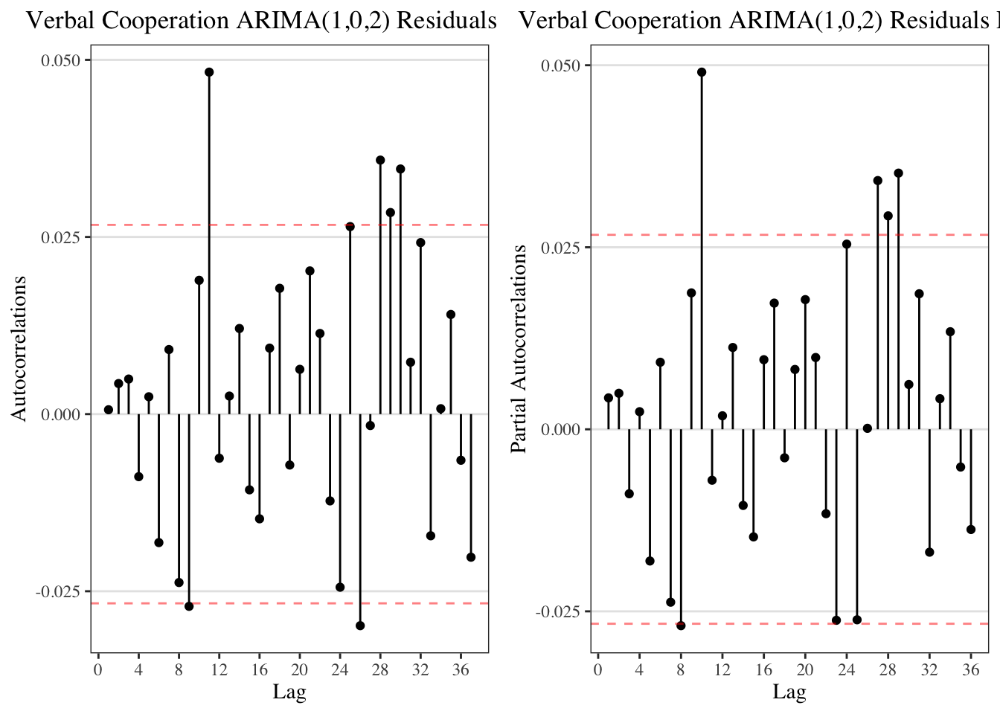
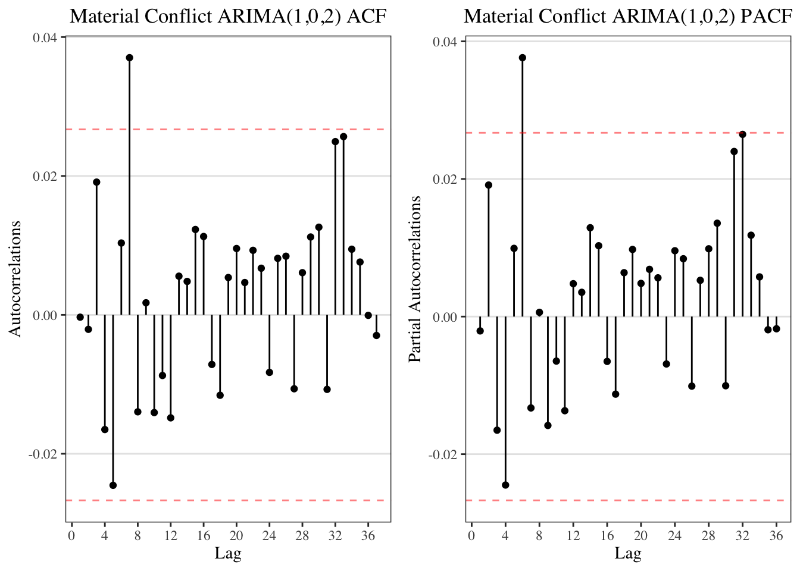
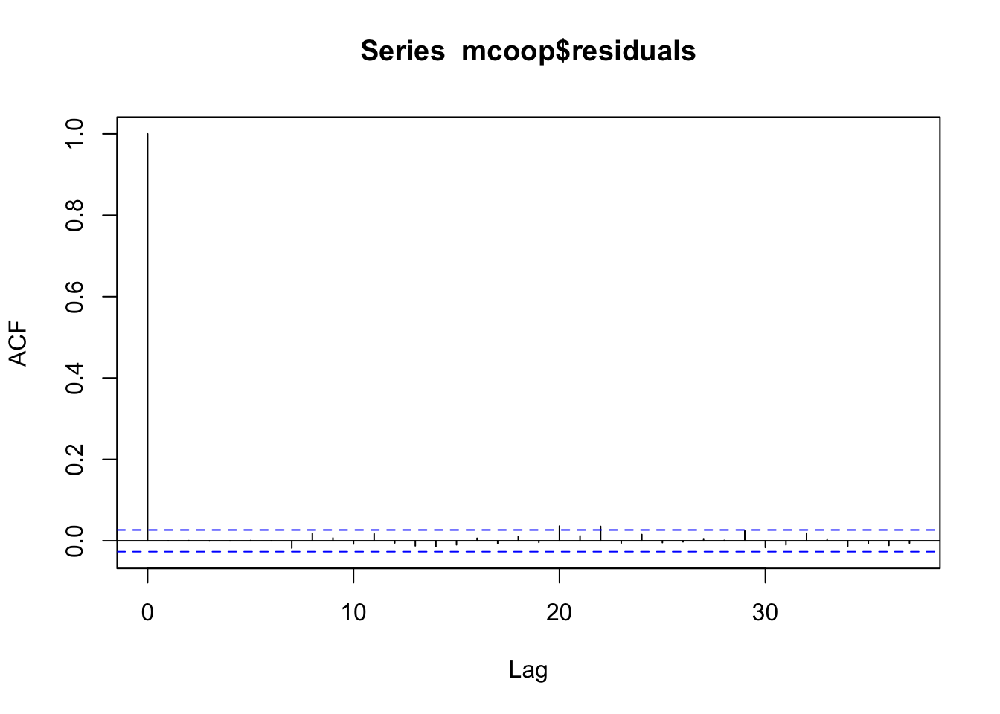
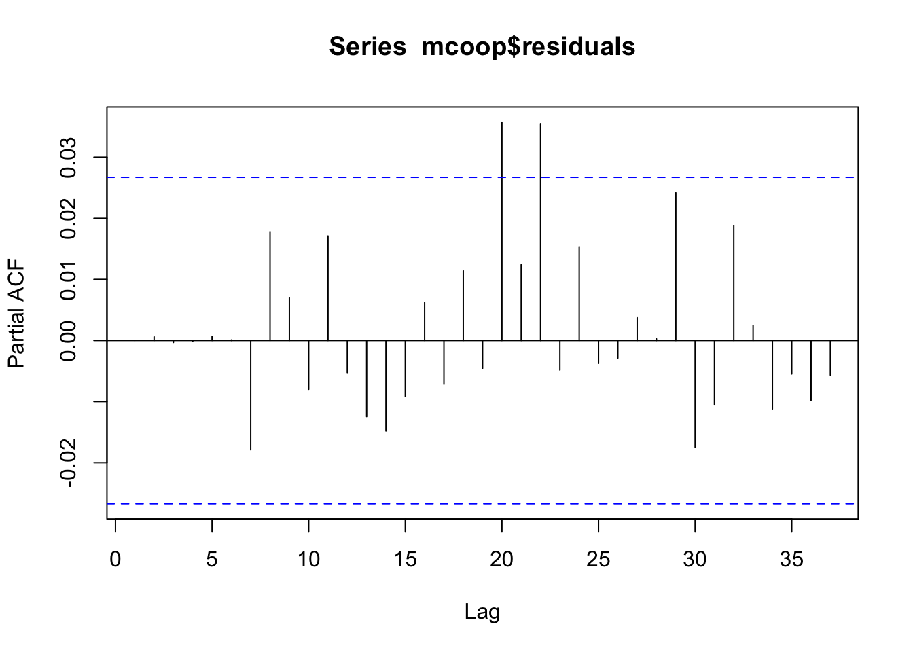
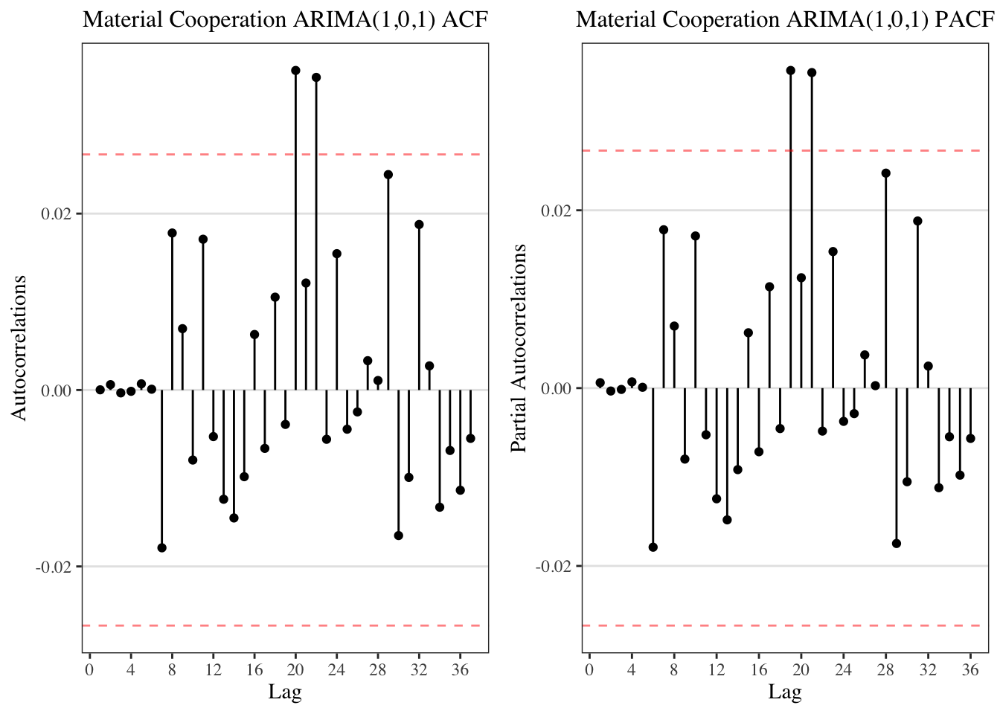

3 Modeling
Note-to-self: should I consider changing each time-series vector using something like
vector <- ts(vector, frequency = frequency)? Got this thought from http://stats.stackexchange.com/questions/266036/modeling-a-time-series-with-diminishing-seasonality. While this did not solve seasonality as expected, …
3.1 Unit Root Test
| Test Statistics | 10pct | 5pct | 1pct | Integrated at 95% level |
|---|---|---|---|---|
| -10.39 | -3.12 | -3.41 | -3.96 | No |
| Test Statistics | 10pct | 5pct | 1pct | Integrated at 95% level |
|---|---|---|---|---|
| -16.99 | -3.12 | -3.41 | -3.96 | No |
| Test Statistics | 10pct | 5pct | 1pct | Integrated at 95% level |
|---|---|---|---|---|
| -21.05 | -3.12 | -3.41 | -3.96 | No |
| Test Statistics | 10pct | 5pct | 1pct | Integrated at 95% level |
|---|---|---|---|---|
| -28.37 | -3.12 | -3.41 | -3.96 | No |
3.2 ARIMA Specifications
3.2.1 Verbal Conflict
Does it look like seasonality?Figure 3.1: ACF & PACF of Verbal Conflict
## Saving 7 x 5 in imageOne quick way to address this is to use a dummy variable for each day of the week, and then plot the ACF & PACF of this model’s residuals. However, this does not seem to resolve the issue.
ritualized_day$wday <- wday(ritualized_day$time)
season <- lm(ritualized_day$`Verbal Conflict` ~ factor(ritualized_day$wday))
season_residual_acf <- acf(season$residuals, plot=FALSE)
season_residual_pacf <- pacf(season$residuals, plot=FALSE)Figure 3.2: ACF & PACF of Verbal Conflict’s Weekday Residuals
3.2.1.1 Residual ACF after ARIMA selection
## Series: ritualized_day$`Verbal Conflict`
## ARIMA(2,0,1) with non-zero mean
##
## Coefficients:
## ar1 ar2 ma1 mean
## 1.2347 -0.2618 -0.8914 0.7849
## s.e. 0.0218 0.0177 0.0157 0.1187
##
## sigma^2 estimated as 4.758: log likelihood=-11838.85
## AIC=23687.71 AICc=23687.72 BIC=23720.67##
## Box-Pierce test
##
## data: vconf$residuals
## X-squared = 0.061231, df = 1, p-value = 0.8046Figure 3.3: ACF & PACF of the Residuals of Verbal Conflict ARIMA(2,0,1)
3.2.2 Verbal Cooperation
Figure 3.4: ACF & PACF of Verbal Cooperation
3.2.2.1 Fitting ARMA
## Series: ritualized_day$`Verbal Cooperation`
## ARIMA(1,0,2) with non-zero mean
##
## Coefficients:
## ar1 ma1 ma2 mean
## 0.8514 -0.4583 -0.1838 6.4445
## s.e. 0.0253 0.0301 0.0207 0.4075
##
## sigma^2 estimated as 154.5: log likelihood=-21210.17
## AIC=42430.34 AICc=42430.35 BIC=42463.3##
## Box-Pierce test
##
## data: vcoop$residuals
## X-squared = 0.0020515, df = 1, p-value = 0.9639
3.2.3 Material Conflict
Figure 3.5: ACF & PACF of Material Conflict
## Saving 7 x 5 in image3.2.3.1 Fitting
## Series: ritualized_day$`Material Conflict`
## ARIMA(1,0,2) with non-zero mean
##
## Coefficients:
## ar1 ma1 ma2 mean
## 0.8466 -0.6294 -0.0658 0.1748
## s.e. 0.0269 0.0305 0.0179 0.0226
##
## sigma^2 estimated as 0.6957: log likelihood=-6662.25
## AIC=13334.5 AICc=13334.51 BIC=13367.46## Series: ritualized_day$`Material Conflict`
## ARIMA(1,0,2) with non-zero mean
##
## Coefficients:
## ar1 ma1 ma2 mean
## 0.8466 -0.6294 -0.0658 0.1748
## s.e. 0.0269 0.0305 0.0179 0.0226
##
## sigma^2 estimated as 0.6957: log likelihood=-6662.25
## AIC=13334.5 AICc=13334.51 BIC=13367.46##
## Box-Pierce test
##
## data: mconf$residuals
## X-squared = 0.00059702, df = 1, p-value = 0.9805
3.2.4 Material Cooperation
Figure 3.6: ACF & PACF of Material Cooperation
3.2.4.1 Fitting
##
## Fitting models using approximations to speed things up...
##
## ARIMA(2,0,2) with non-zero mean : Inf
## ARIMA(0,0,0) with non-zero mean : 6345.437
## ARIMA(1,0,0) with non-zero mean : 6245.821
## ARIMA(0,0,1) with non-zero mean : 6257.95
## ARIMA(0,0,0) with zero mean : 6444.404
## ARIMA(2,0,0) with non-zero mean : 6223.107
## ARIMA(3,0,0) with non-zero mean : 6220.375
## ARIMA(4,0,0) with non-zero mean : 6219.841
## ARIMA(5,0,0) with non-zero mean : 6215.142
## ARIMA(5,0,1) with non-zero mean : 6217.149
## ARIMA(4,0,1) with non-zero mean : 6217.536
## ARIMA(5,0,0) with zero mean : 6264.927
##
## Now re-fitting the best model(s) without approximations...
##
## ARIMA(5,0,0) with non-zero mean : 6210.25
##
## Best model: ARIMA(5,0,0) with non-zero mean## Series: ritualized_day$`Material Cooperation`
## ARIMA(5,0,0) with non-zero mean
##
## Coefficients:
## ar1 ar2 ar3 ar4 ar5 mean
## 0.1238 0.0620 0.0270 0.0209 0.0378 0.060
## s.e. 0.0136 0.0137 0.0137 0.0137 0.0136 0.008
##
## sigma^2 estimated as 0.1852: log likelihood=-3098.11
## AIC=6210.23 AICc=6210.25 BIC=6256.37##
## Box-Pierce test
##
## data: mcoop$residuals
## X-squared = 2.6576e-06, df = 1, p-value = 0.9987